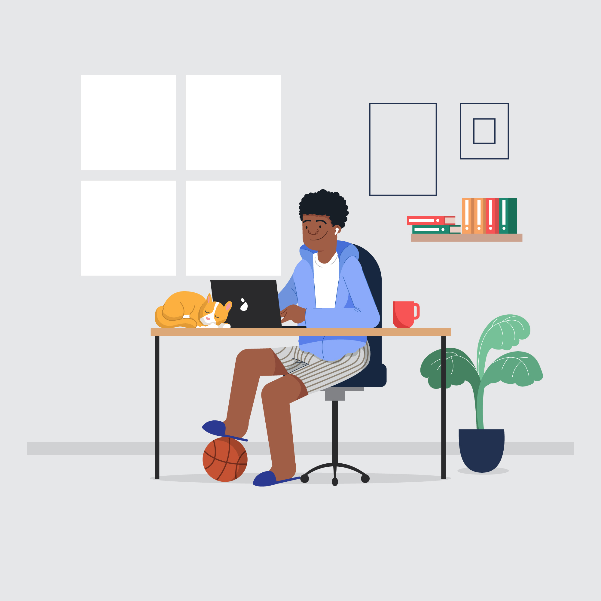

วิธีการดูแลสุขภาพดวงตาไม่ให้เสื่อมก่อนวัย

1. ปรับแสงหน้าจอคอมพิวเตอร์ แท็บเล็ต หรือสมาร์ทโฟนให้พอดี ไม่มืดหรือสว่างเกินไป

2. ควรอยู่ห่างจากหน้าจอดิจิตอลต่างๆในระยะที่เหมาะสม
3. ใส่แว่นกันแดดที่ได้มาตรฐานขณะออกแดด
4. สำหรับผู้ที่ใส่คอนแทคเลนส์ไม่ควรใส่เกินวันละ 8-12 ชม.

5. พักสายตา ทุกๆ 20 นาที

6. พักผ่อนให้เพียงพอและทานอาหารที่มีประโยชน์
7. ควรใช้ยาหยอดตาที่ไม่ผสมสารกันเสีย
8. ตรวจสุขภาพดวงตาประจำปี